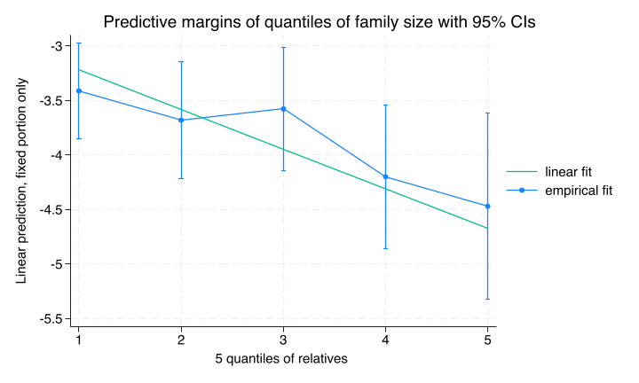
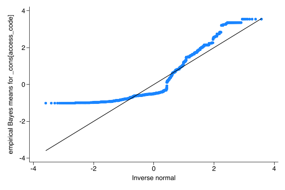

Family size is highly predictive of testing. We checked the functional form by including a quadratic or a log term and then at the empirical fit on the log odds scale for quantiles of family size and compared it to the linear fit of
Regression output checking quadratic and log terms
code
run sub/load_data.dorun sub/create_vars.doqui {xtile dec_rel=relatives ,nq(5)replace c_relatives=c_relatives+2.6gen lnrelative=ln(c_relatives)melogit test i.costarm i.navarm c_relatives lnrelative i2scale_std /// female || access_code: , nologeformpredictxb, xb}* lnrelative not significantmelogit test i.costarm i.navarm c_relatives lnrelative i2scale_std /// female || access_code: , nologeform* quadratic not significantmelogit test i.costarm i.navarm c.c_relatives##c.c_relatives i2scale_std /// female || access_code: , nologeform* compare linear to empirical fitqui melogit test i.costarm i.navarm i.dec_rel i2scale_std /// female || access_code: , nologeformqui margins i.dec_rel,predict(xb)marginsplot,addplot(lfitxb dec_rel, legend(order(3 "linear fit"/// 2 "empirical fit" ))) ///title(Predictive margins of quantiles offamilysize with 95% CIs)quigraphexport img/fam_size_quantiles.png,replace
Mixed-effects logistic regression Number of obs = 4,946
Group variable: access_code Number of groups = 414
Obs per group:
min = 1
avg = 11.9
max = 91
Integration method: mvaghermite Integration pts. = 7
Wald chi2(6) = 37.10
Log likelihood = -941.08906 Prob > chi2 = 0.0000
------------------------------------------------------------------------------
test | exp(b) Std. err. z P>|z| [95% conf. interval]
-------------+----------------------------------------------------------------
1.costarm | 2.498218 .5852906 3.91 0.000 1.578367 3.954145
1.navarm | 1.324863 .3039671 1.23 0.220 .8450397 2.077134
c_relatives | .7761683 .0832417 -2.36 0.018 .6290237 .9577336
lnrelative | 1.059649 .2256804 0.27 0.786 .6980336 1.6086
i2scale_std | 1.0222 .1207791 0.19 0.853 .8108892 1.288578
female | 1.555947 .218964 3.14 0.002 1.180885 2.050133
_cons | .0196946 .0063853 -12.11 0.000 .0104322 .037181
-------------+----------------------------------------------------------------
access_code |
var(_cons)| 2.292036 .451409 1.558046 3.371808
------------------------------------------------------------------------------
Note: Estimates are transformed only in the first equation.
LR test vs. logistic model: chibar2(01) = 143.15 Prob >= chibar2 = 0.0000
Mixed-effects logistic regression Number of obs = 4,946
Group variable: access_code Number of groups = 414
Obs per group:
min = 1
avg = 11.9
max = 91
Integration method: mvaghermite Integration pts. = 7
Wald chi2(6) = 36.53
Log likelihood = -941.04524 Prob > chi2 = 0.0000
------------------------------------------------------------------------------
test | exp(b) Std. err. z P>|z| [95% conf. interval]
-------------+----------------------------------------------------------------
1.costarm | 2.499471 .5857512 3.91 0.000 1.578952 3.956646
1.navarm | 1.327965 .3047973 1.24 0.217 .8468702 2.082361
c_relatives | .8411695 .1371012 -1.06 0.289 .6111491 1.157763
|
c. |
c_relatives#|
c. |
c_relatives | .993154 .0174887 -0.39 0.696 .9594616 1.02803
|
i2scale_std | 1.023435 .1209206 0.20 0.845 .8118759 1.290124
female | 1.557269 .219102 3.15 0.002 1.18196 2.051751
_cons | .0178293 .0069618 -10.31 0.000 .008294 .0383269
-------------+----------------------------------------------------------------
access_code |
var(_cons)| 2.292597 .4514892 1.558467 3.372545
------------------------------------------------------------------------------
Note: Estimates are transformed only in the first equation.
LR test vs. logistic model: chibar2(01) = 143.09 Prob >= chibar2 = 0.0000
Variables that uniquely identify margins: dec_rel
Empirical fit vs linear fit on log odds scale

The linear fit seems like a reasonable functional form of the model
11.0.2 Checking correlation of covariates and random effects
The model depends on independence of subject-level covariates and the random effects. One way to check for this is to include the cluster-mean of a subject level covariate and test its significance.
Regression output with cluster-mean of proportion female relatives included
The coefficient for the mean family proportion of female relatives was not significant which provides some evidence for the assumption of independence of subject-level covariates and the random effects. However the point estimate is substantial with a confidence interval largely below one. However the point estimates of the intervention effects are reassuringly not affected by including this variable.
Graph of marginal probability of testing by relative sex as function of cluster family size
We can see the relationship of testing to mean family proportion of female relatives and individual female sex from this regression in the graph below on the probability scale averaging over the other coefficients and family size.
Generalized multilevel models also make an assumption of normally distributed random effects.
For testing, given the descriptive data showing substantial numbers of people with 0 testing we suspect the assumption is moderately violated.
code
run sub/load_data.dorun sub/create_vars.do* Full modelqui melogit test i.costarm i.navarm c_relatives i2scale_std /// female || access_code: , eform* Caterpillar graphquipredict re_effect,reffects ebmeans reses(re_ses)qnorm re_effectquigraphexport img/test_re_dist.png, replace

As expected there is departure from normality at the lower end of the random effects scale. However, work by McCulloch (McCulloch and Neuhaus (2011)) and Neuhaus (Neuhaus, McCulloch, and Boylan (2012)) and echoed by Rabe-Hesketh & Skrondal (Rabe-Hesketh and Skrondal (2022)) suggest that these departures from normality have minimal effect on the fixed effects estimates or the covereage of the confidence intervals.
11.0.4 Distribution of random effects for invitation
McCulloch, Charles E, and John M Neuhaus. 2011. “Prediction of Random Effects in Linear and Generalized Linear Models Under Model Misspecification.”Biometrics 67 (1): 270–79. https://doi.org/10.1111/j.1541-0420.2010.01435.x.
Neuhaus, John M., Charles E. McCulloch, and Ross Boylan. 2012. “Estimation of Covariate Effects in Generalized Linear Mixed Models with a Misspecified Distribution of Random Intercepts and Slopes.”Statistics in Medicine 32 (14): 2419–29. https://doi.org/10.1002/sim.5682.
Rabe-Hesketh, Sophia, and Anders Skrondal. 2022. Multilevel and Longitudinal Modeling Using Stata. Fourth edition. College Station, Texas: Stata Press.
{kind=link}